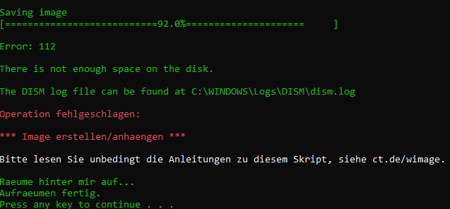

Set up image backup with c’t-WIMage [1]
WIMage is a backup solution provided by c’t for the main disk partition (C:\).
The Windows Setup Tool, which installs Windows operating system images, accepts
such a backup and transfers them onto hard disk partitions. WIMage supports
Windows 8.1, 10 (from 1703) and 11 in both 32 and 64-Bit variants.
Prerequisites
An empty, external USB drive having the size of the main disk partition or more. WIMage makes use of up to 2 TB of available storage (limitation of the MBR-Partitioning). It supports larger drives, though doesn’t use the extra space: Saving partitions larger than 2 TB might fail.
The latest version of WIMage, downloadable from https://www.heise.de/hintergrund/c-t-WIMage-Stand-16-10-2017-3863074.html
The latest version of the Media Creation Tool (not available for Windows 8.1, which requires downloading the ISO image):
Migrate any installed WSL-1 distributions to WSL-2 (Migrate to WSL-2)
Procedure
Setup
Connect the USB storage device.
Start the Media Creation Tool and step through the wizard to create an installation media.
Select the exact version, which the backup installation uses (for example, Windows 10 Pro 64-Bit).
Select the USB storage device as target and launch the creation. The wizard assigns
ESD-USBas name for the installation media.Warning
For Windows 8.1, use Rufus to create the installation media.
Unzip
ct-WIMage.zipand copy both thect-WIMagedirectory andct-WIMage-maker.battoESD-USB’s root directory (which already contains the Windows install files).On the storage device, run
ct-WIMage-maker.batas administrator.Confirm the security question with “J” (Ja/Yes).
The script creates a new partition on the storage device. If the explorer appears in the forefront, ignore it. Don’t abort the script.
After the setup is complete, the ESD-USB device name changed to
CT-BOOT (keeping the same assigned to drive letter D, if not already occupied)
and created an additional drive, named CT-WIMAGE (assigned to drive letter E, if
not already occupied).
Create backup
Important
The initial backup can take 5 hours and longer, though parallel work is still possible. Choose a suitable time slot for it.
If the initial backup is aborted in the process, the Setup steps need to be repeated as the backup script reports errors, like:
Error: 13
The data is invalid
Important
It is recommended to quit OneDrive during the initial backup, as it tends the crash WImage. This was not observed for subsequent backups.
Open the
CT-WIMAGEdevice and execute thect-WIMage-x64.batas administrator.Hint
In case
CT-BOOTuses a 32-Bit operating system the file is namedct-WIMage-x86.bat.The explorer might open a new window in the foreground, selecting another new partition (drive letter P, if not already occupied), which is a shadow copy of your system drive. Its content which is then saved onto
CT-WIMAGE.Wait until the backup is complete (might take several hours on first run, depending on the disk size and transfer speed).
Hint
In case of errors, check out the troubleshooting section.
Hint
It might happen that the process gets stuck. The output
Deployment Image Servicing and Management tool Version: 10.0.19041.844
is showing and the copy process does not start for over an hour. Hit Enter to proceed, which prints the message
Saving image
After a short while, the progress bar should appear.
Hint
Future backups are faster, depending on the amount of changes after the last backup, but may still take 3 hours or longer.
Restore from backup
Follow these steps to restore the hard disk from the backup. This may become necessary in case of
a hard disk defect
a serious error in your Windows installation (for example due to updates or some other erroneous actions)
transferring the present state to a new hard disk
Boot your PC from the external USB storage device.
Hint
How to do so depends on the hardware provider’s BIOS. You might have to disable secure boot to enable booting from external devices).
After the Windows setup initialized, select your preferred keyboard layout and location.
Next up, select Install now.
After the setup has started (might take a minute to complete), accept the license terms and select Next.
Select the customized installation type.
Choose the install location. If you want to restore your broken Windows partition, select the one containing the existing main disk partition
C:\. If you are using a different hard disk, select a partition which has a size of not less than the original backed up drive.Warning
The
CT-BOOTandCT-WIMAGEpartitions should also be listed, but are not to be used!Warning
When selecting a partition which already holds a Windows installation, WIMage moves that content to a sub-directory named
Windows.old. From there you may access earlier files. In this case, the hard disk requires space to store another instance. Logically, if the old files aren’t needed or the backup partition uses more than 50 % of its available space, format the drive first.Choose Next and wait until the installation is complete.
Restart the PC (in case, external disks have boot priority according to your BIOS settings, detach the hard disk after the shutdown).
Troubleshooting
WIMage exits due to missing wimre.wim
WIMage requires a copy of the Windows RE (Recovery Environment), which resides
on a separate partition. The RE partition is commonly used to repair a corrupted
Windows installation.
In case it isn’t found, the script exits with a note Operation fehlgeschlagen after the
message Windows RE auf Windows-Partition verschieben.
Check, if the recovery environment is active:
reagentc /infoIf it shows enabled under Status, it’s already active. In this case, deactivate it temporarily by entering:
C:\> reagentc /disable
You may check the status via
/infoagain to verify.Go to
C:\Windows\System32\Recoveryand check whether it contains a file namedwinre.wim. In case it does, leave the rescue environment status as is and start another WIMage backup.In case it doesn’t, the rescue system is missing and must be retrieved by another Windows installation using the same Windows version. For instance, when using Windows 10 Pro, the file must come from the same edition, though the version may differ for example 21H2 also accepts the rescue system from 22H2.
Download the Media Creation Tool (in case of Windows 8.1, download the ISO image) for the respective Windows version (Create <VERSION> installation media entry):
Connect a USB storage device with at least 16 GB of disk space. Careful: Creating the startup disk formats the device, so save any important data from the device first, if needed.
Important
For Windows 8.1
Download Rufus to create an installation media using the downloaded ISO. Ignore the next step.
Launch the Media Creation Tool / Rufus, follow the wizard and create the installation media.
Go to the
sourcesdirectory on the installation media device and locate a file calledinstall.esdand copy it toC:\.Open a command prompt as administrator, go to
C:\and runC:\> dism /Export-image /SourceImageFile:install.esd /SourceIndex:1 /DestinationImageFile:C:\install.wim /Compress:max /CheckIntegrity
which converts the file to
install.wimlocated at the same directory.Mount the file by running
C:\> mkdir C:\wintemp C:\> dism /Mount-Wim /WimFile:"C:\install.wim" /index:1 /MountDir:"C:\wintemp"
Go to
C:\wintemp\Windows\System32\Recoveryand copy theWinre.wimfile toC:\Windows\System32\Recovery.Restart the WIMage script. If the error doesn’t reoccur, delete
C:\wintemp,install.wimandinstall.esd. First unmountC:\wintempvia:C:\> dism /Unmount-Wim /mountdir:C:\wintemp /discard
OneDrive sync crashes WIMage
Experiences show that synced directories or files in OneDrive from which you aren’t the owner are crashing WIMage. To prevent that, stop the sync on all these directories or files and delete them from the hard disk. You may resync them after the backup, if needed.
Hint
Better quit OneDrive before creating the backup.
The scripts reports the following error at the first stage and exits:
-9 was unexpected at this time
To resolve it open ct-WIMage-x64.bat on the root of your CT-WIMAGE
partition and find the following line (at around line 234):
for /f "tokens=3" %%a in ('dir %systemdrive% /-c ^| findstr /i "Verzeichnis(se)"') do set frei=%%a
and replace it with:
for /f "tokens=2" %%a in ('wmic volume get DriveLetter^,FreeSpace ^| findstr /i "%systemdrive%"') do set frei=%%a
Save and close the file and start a new run.
Damaged hard disk junctions due to OneDrive
Somewhere during the script operation, the script abort showing this error:
ERROR 4393
The tag present in the reparse point buffer is invalid
It means, some mentioned junction files might be in a damaged state. This may occur if OneDrive has crashed or terminated improperly at some point.
Open a command prompt as administrator.
Enter (in case the system drive uses a different letter, replace
cbelow):C:\> chkdsk c: /r /f
Confirm with Y when asked.
Restart the PC and wait for the disk check to complete (it may take two hours or longer).
Retry running the WIMage script.
Backup fails due to insufficient free disk space
During the execution of a backup, the following error message appears on the command line:
The external hard disk ran out of space to save the new backup image. ct-WIMage originally is supposed to automatically remove the oldest images to make space for the new ones, but this mechanism may not work in any case.
In such a case, the latest image needs to be exported into a new image file and
overwrite the existing image bundle file (install.wim). Follow these steps:
Connect the external hard disk (which contains the WIMage backups).
Open a command line as administrator.
Analyze the image bundle file (
install.wim) on the external disk (here: disk letter E):C:\> Dism /Get-ImageInfo /ImageFile:E:\sources\install.wim
Make sure you have enough free disk space on your internal hard disk (or an additional external hard disk) to save the latest image (highest index), which is approximately half the size of the currently occupied space on the main disk partition (C:).
Change into the directory, where you like to temporarily save the new image into.
Export the latest image into a new Windows image file (here again, disk letter E), replacing the <HIGHEST_INDEX> with the proper number:
C:\> Dism /Export-Image /SourceImageFile:E:\sources\install.wim /SourceIndex:<HIGHEST_INDEX> /DestinationImageFile:install.wim
The export may take around 15 minutes, depending on the image size and your hardware. The filesize should be less than the corresponding file on the external hard disk.
You may check the resulting image file for its content:
C:\> Dism /Get-ImageInfo /ImageFile:install.wim
Replace
E:\sources\install.wimon the external hard disk with the newly created one. Make sure to delete it from its original destination afterwards.Start a new backup cycle, which should finish successfully.